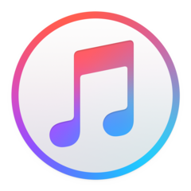

|
Moim głównym hobby, które dość mocno rozwijam jest tworzenie stron internetowych. Coraz bardziej interesuje mnie funkcjonalność tych stron, a co za tym idzie, język JavaScript. W przyszłości chciałbym pracować w tej dziedzinie. Aby nauczyć się tworzyć własne strony internetowe kliknij tutaj.
|

|

|
Jednym z moich zainteresowań jest administrowanie serwerami. Razem z kolegą często stawiamy serwery m.in. różnych gier. Działają one głównie dla wąskiego grona znajomych, lecz może kiedyś rozwinie się to na większą skalę. 😄 Aby dowiedzieć się jakie były najlepiej sprzedające się gry na niektóre konsole kliknij tutaj.
|
Moją pasją jest słuchanie muzyki. Codziennie rozpoczynam nią dzień, dzięki czemu staje się on od razu lepszy, a także pomaga mi się skupić podczas programowania. Aby dowiedzieć się jak umieścić muzykę na stronie internetowej kliknij tutaj. Poniżej znajduje się lista moich ulubionych piosenek:
| LP |
Tytuł |
Artysta |
Okładka |
| 1 |
Zielone |
Palion |
 |
| 2 |
18 |
White 2115 |
 |
| 3 |
La Manga |
Alberto, Josef Bratan |
 |
| 4 |
Jetlag |
Kizo, Masny Ben |
 |
|

|